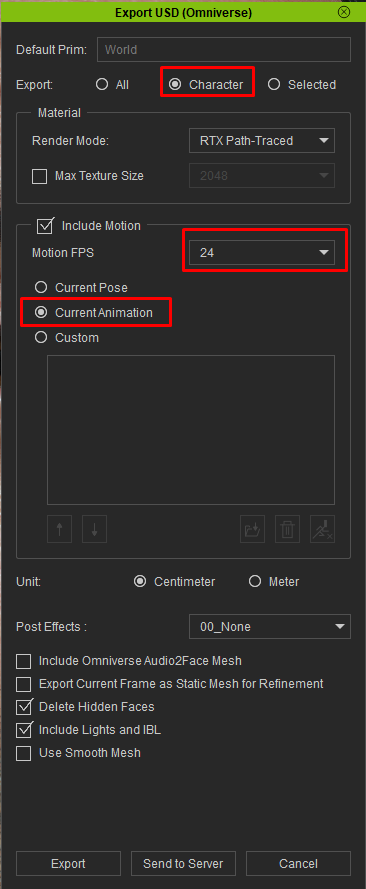
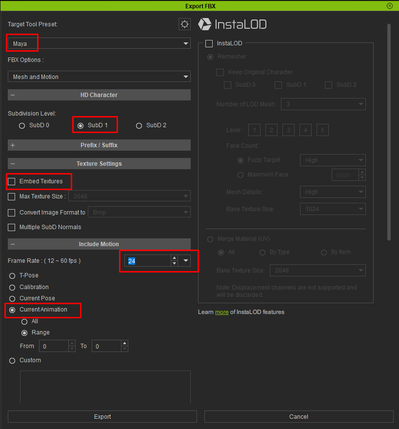
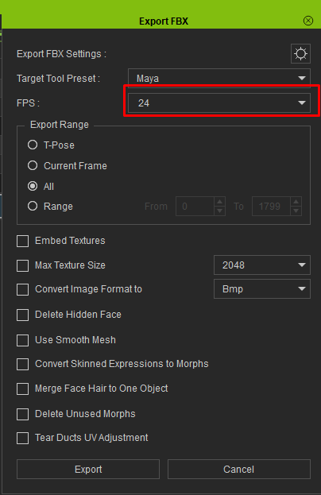
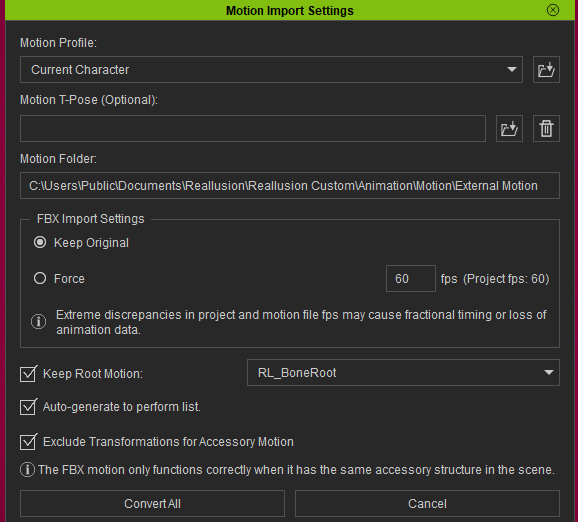

Preparing Your Character in Character Creator
This is the most important setup page in the documentation. Getting your Character Creator export settings right is the difference between a character that imports perfectly and one that's missing textures, wrinkles, or hair detail. Read this carefully — it'll save you a lot of frustration.
The good news: once you know the correct settings, exporting is quick and you can reuse the same settings every time.
Which export — at a glance
The tool imports FBX or USD, from either Character Creator or iClone, chosen with the Import dropdown at the top of the node. Here's the quick version:
Recommended for the best look
Import the character as FBX — it keeps the expression wrinkles and full hair re-dye that make a Character Creator face come alive — and drive its motion with lightweight USD motion clips from the animation database. You keep the FBX-only look while the animation stays featherweight; export the character Mesh only if all its motion will come from clips. See USD vs FBX for the full trade-off.
Using iClone?
The character export settings match Character Creator's (just a different menu); iClone-authored animation needs one extra step to reach Houdini — see
Both exports are quick once you know the settings. Follow the section for your export below — Character Creator
Exporting as USD (recommended)
In Character Creator, go to File ▸ Export ▸ Export USD (Omniverse). In the Export USD panel:
- Export → Character — not All. "All" drags scene lights, cameras, and a shadow-catcher into the file. The tool copes with either, but Character keeps the file clean.
- Include Motion → ON, set to your Current Animation, to bring the animation in. Turn it off for a static character.
- Motion FPS — match your Houdini scene's FPS (24 if you haven't changed Houdini's default; see the note under the FBX section about matching frame rate).
- Everything else (Render Mode, Unit: Centimeter, Post Effects: None) can stay at its default.

Delete Hidden Faces is fine
Character Creator's Delete Hidden Faces option (on by default) trims faces hidden under clothing. The tool fully handles this — leave it at its default.
After export you'll have a .usd file with a Materials folder beside it (holding Materials/Textures/<Material>/…), and — when motion was included — a Motions folder with the animation as its own small .usd clip. Keep the .usd and its folders together — the tool resolves textures relative to the .usd. The Motions clip is also exactly what Add Animation takes as a lightweight animation-database clip, so USD exports double as a cheap way to bank motion clips. There is no .json sidecar in USD mode: Character Creator writes the material data (subsurface, displacement, eye/skin shader values, accessory colors) directly into the USD instead. That's everything for USD — you can skip ahead to the Quick Start.
Exporting as FBX
In Character Creator, with your character ready, go to File ▸ Export ▸ Clothed Character ▸ FBX. You'll see the Export FBX panel. Here's how to set it, top to bottom.

Target Tool Preset — Maya
Set the preset to Maya. This exports a clean, standard FBX with the bone and material structure the tool expects, and writes the textures into a folder alongside the FBX.
FBX Options — Mesh and Motion
Choose Mesh and Motion to bring the character in with its animation. If you only need the static character, Mesh alone works; if you're adding the motion separately, Motion alone works too. For most users, Mesh and Motion is the right choice.
Subdivision Level — SubD 1
Set the subdivision level to SubD 1. This gives you smooth, render-quality geometry. SubD 2 is overkill — it quadruples the geometry for detail you won't see, and just costs you memory and import time. SubD 0 is too coarse for close-ups. SubD 1 is the sweet spot.
Texture Settings — Embed Textures OFF
Leave Embed Textures unchecked (off). The tool reads textures from the folders Character Creator writes next to the FBX — the .fbm folder and/or a loose textures folder — so you don't need them embedded. Leaving it off also keeps the FBX smaller and, importantly, keeps the export re-importable back into Character Creator (embedding breaks that).
Embedding textures has no effect on the material data the tool depends on for displacement, subsurface, wrinkles, and accessory colors — that comes from a separate .json file (see
Leave the other texture options (Max Texture Size, Convert Image Format, Multiple SubD Normals) at their defaults.
Frame Rate — match your Houdini scene
Set the Frame Rate to match your Houdini scene's FPS. The Maya preset defaults this to 30, but Houdini's default scene is 24 fps — so if you haven't changed your Houdini scene, set this to 24. If your scene runs at a different rate, match that. Getting this right keeps the animation playing at the correct speed after import.
Motion options
Under Include Motion, choose what to export — Current Animation ▸ All brings in the whole clip. Use Range if you only want part of it.
Other settings — leave at defaults
Everything else in the Export FBX panel can stay at its defaults. In particular, the defaults already bake skin and hair color into the diffuse maps the tool reads — Bake diffuse maps from skin color and Bake diffuse and specular from Digital Human Hair Shader are on by default, so leave them on. (The tool's hair re-dye system still lets you recolor afterward — see Hair.)
The one default worth double-checking:
- Bake Wrinkles for Still Frame must stay OFF (its default). Turning it on freezes the expression wrinkles into a single pose so they can't animate.
If your wrinkles don't animate after import, the usual cause is Bake Wrinkles for Still Frame being switched on. Make sure wrinkles are exported as live maps, not baked to a frozen pose.
Advanced export settings (the gear icon)
The ⚙ gear icon at the top of the Export FBX dialog opens an advanced panel. You normally don't need to touch it — its defaults are correct — but two of those defaults matter to this tool, so it's worth a glance to confirm they're still set:
- Export JSON for Auto Material Setup (General section) — must stay on (the default). This writes the
my_character.jsonthe tool relies on for displacement, subsurface, wrinkles, and accessory colors. If an export ever comes out without a.json, this is the switch to check. - Normal — OpenGL (Y+) (Normal section) — must stay OpenGL (Y+) (the Maya-preset default), not DirectX (Y−). Houdini and Karma expect OpenGL-convention normal maps; the DirectX option flips the green channel, which inverts the skin's fine surface detail (pores and wrinkles read inward instead of outward).
Everything else in this panel can stay at its defaults.
Exporting from iClone
iClone is the other half of the Reallusion pipeline — it's where you author and mocap animation. There are two things you might export from iClone: the character itself, and an animation you've built on it.
The character
You can export a character from iClone the same way you would from Character Creator — the export panels are the same, just reached from iClone's menus:
- FBX (File ▸ Export ▸ Export Clothed Character) — the reliable choice, identical to the
FBX section above. - USD via the NVIDIA Omniverse plugin (File ▸ Export ▸ Export USD (Omniverse)) — see the warning below.

iClone's direct USD export is experimental
iClone's "Export USD (Omniverse)" is structured differently from Character Creator's USD export, and this importer targets Character Creator's. Standard characters generally import correctly (with textures, as of version 1.2.1), but stylized characters — especially ones with heavy custom hair or spring-bone rigs — can import badly deformed. For the most reliable result with an iClone character, export it as FBX, or send it to Character Creator and export from there — Character Creator's own USD export is the fully-supported USD path.
Getting iClone animation into Houdini
If you've authored a performance in iClone that you want as a motion clip for the animation database, you have two routes. Option B (the Character Creator round-trip) is the reliable one — Option A depends on iClone's experimental USD export above.
Option B — FBX round-trip through Character Creator (recommended)
Export your animation from iClone as FBX, then bring it onto the character in Character Creator, which re-exports it in a format this tool fully supports:
- In Character Creator, go Import ▸ Import External Motion and choose the FBX you exported from iClone.
- Wait while "Fetching Characterization Profile" finishes loading.
- In the Motion Import Settings dialog that follows, you can leave the defaults. Click Convert All.
- Re-export the character from Character Creator — as USD (recommended) or FBX — with that motion, using the export sections above.

Option B fits the
Option A — USD, via the NVIDIA Omniverse plugin (experimental)
If you'd rather export USD straight from iClone, install Reallusion's iClone Omniverse plugin, following the official installation guide. It adds USD export to iClone directly, so you can export USD (character and motion) much as you would from Character Creator.
Large install, and experimental
The Omniverse plugin takes roughly 10–20 minutes to install and about 10 GB of disk space. And as noted above, iClone's USD export is experimental with this tool — standard characters usually work, but stylized ones may not. If in doubt, prefer Option B.
Animation
If you want the character's motion to come in with it, export with the animation baked in. The tool reads the embedded FBX animation automatically, and you can add more clips later — see Animation.
Validate with a static pose first. If you're exporting a long animation (hundreds of frames), it's worth doing a quick static-pose export first to confirm the character imports and shades correctly, before committing to baking a long, heavy animation.
Keeping files together
After export you'll have:
my_character.fbx
my_character.json (material data — REQUIRED, see below)
my_character.fbxkey (Character Creator re-import key)
my_character.fbm/ (textures Character Creator writes beside the FBX)
textures/
my_character/ (loose texture folders, if any)
Std_Skin_Head/
Std_Eye_L/
Hair_Transparency/
...Keep all of these together. If you move the FBX, move its .json, .fbm, and textures folder with it. The tool resolves everything relative to the FBX, so as long as they travel together, it'll find them.
Keep the filename simple. Letters, numbers, and underscores are the safe set (e.g. aaron_talking.fbx). The tool handles other characters, but plain names keep paths tidy in Houdini and across your wider pipeline.
The .json file is essential — don't lose it
Character Creator writes a my_character.json next to the FBX containing material data the FBX itself can't store: displacement, subsurface scattering, expression-wrinkle weights, and the colors of custom accessories (horns, props, GoZ clothing). If this file is missing, those features silently won't import — displacement won't appear and untextured accessories render plain white, even though the rest of the character looks fine.
It's produced by the Export JSON for Auto Material Setup option, found in the Export FBX dialog's ⚙ gear menu → General section, which is on by default. If your export didn't produce a .json, confirm that option is checked and re-export. See
A note on character versions
The tool is designed for Character Creator 5 / iClone 8, and should work with all CC3+ base meshes. It works best with characters built on Character Creator's standard base meshes. Some advanced features depend on what your specific character provides:
- Wrinkles require the character to have the expression-wrinkle maps (most CC heads do).
- Hair re-dye requires the hair to carry Character Creator's hair maps (root, ID, flow). Hair styles that bake everything into a flat diffuse will still import and look correct, but won't be re-dyeable.
- Displacement requires exported displacement maps.
The tool detects what each character has and enables those features automatically — you don't need to configure anything. If a feature's controls don't seem to do anything, the most likely reason is that your particular character doesn't carry the maps that feature needs.
Ready?
With your character exported correctly, head to the Quick Start to import it.